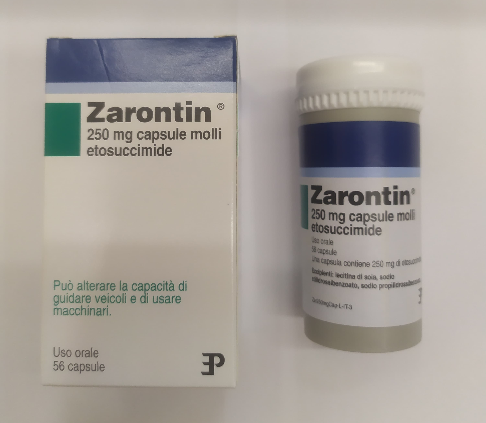

Контактная информация:
Цена: 1800 грн/уп.
Под заказ
Производитель: Италия
Цена: 1800 грн/уп.
Под заказ
Именно в FarmItal вы можете купить Заронтин капсулы, Zarontin capsule в Украине. Гарантированно Качественный!
Доставка Zarontin капсулы осуществляется транспортными компаниями, сроки выполнения заказа оговариваются менеджером Фармитал. Вы можете заказать Заронтин в городах: Одесса, Херсон, Чернигов, Северодонецк, Бердянск, Бровары, Днепр, Винница, Киев, Славянск, Полтава, Краматорск, Белая Церковь, Каменское, Мариуполь, Черновцы, Александрия, Каменец- Подольский, Львов, Запорожье, Кропивницкий, Житомир, Ивано-Франковск, Сумы, Черкассы, Константиновка, Мелитополь, Кривой Рог, Ровно, Луцк, Никополь, Павлоград, Ужгород, Кременчуг, Лисичанск, Хмельницкий, Тернополь, Харьков, Николаев, а также других населенных пунктах Украины.
капсулы – 250 мг(56 капсул)
Оказывает противосудорожное, миорелаксивное и анальгетическое действие. Этосуксимид ингибирует передачу нервных импульсов в коре головного мозга, тем самым снижая вероятность эпилептического приступа. Устойчивый терапевтический эффект достигается на 8-9 день приема препарата. Заронтин капсулы трансформируется в печени и выводится преимущественно через почки. Заронтин способен оказывать анальгезирующий эффект при невралгии тройничного нерва.
Дозировка и длительность лечения устанавливаются индивидуально, учитывая особенности заболевания, и могут в значительной степени отличаться.
Начальная суточная доза как для детей, так и для взрослых составляет 5мг на 1кг массы тела с постепенным повышением дозы на 5мг/кг каждые 4-7 дней.
Поддерживающая суточная доза для взрослых – 15 мг/кг, для детей – 20 мг/кг.
Максимальная суточная доза для взрослых – 30 мг/кг, для детей – 40 мг/кг.
Суточную дозу разбивают на 2-3 приема и принимают во время или после еды.
Перед приемом Заронтина в капсулах обязательно проконсультируйтесь со специалистом.
Не превышайте дозировку, установленную вашим врачом! В случае возникновения побочных эффектов немедленно обратиться к врачу.
Избегать употребления алкоголя при употреблении Заронтина.
Если вы забыли вовремя принять очередную дозу, пропустите этот прием, а следующую дозу выпейте как обычно.
С осторожностью применять для детей до 3-х лет и для пациентов с психическими нарушениями.
Не рекомендуется применение Заронтина капсул при беременности и грудном вскармливании.
При возникновении какой-либо из вышеперечисленных реакций немедленно обратиться к врачу!
Строго соблюдать дозировку, определенную врачом.
Сохранять при комнатной температуре от 15 до 28 градусов.